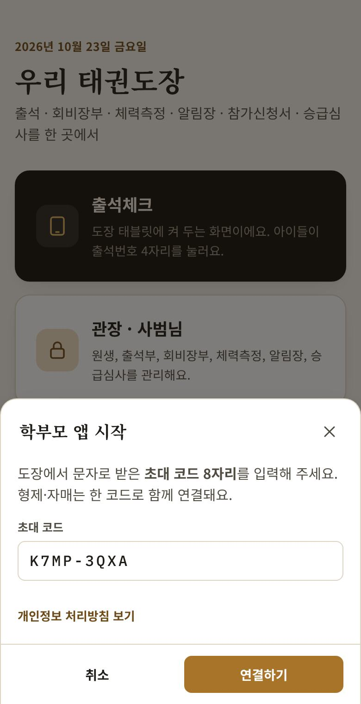
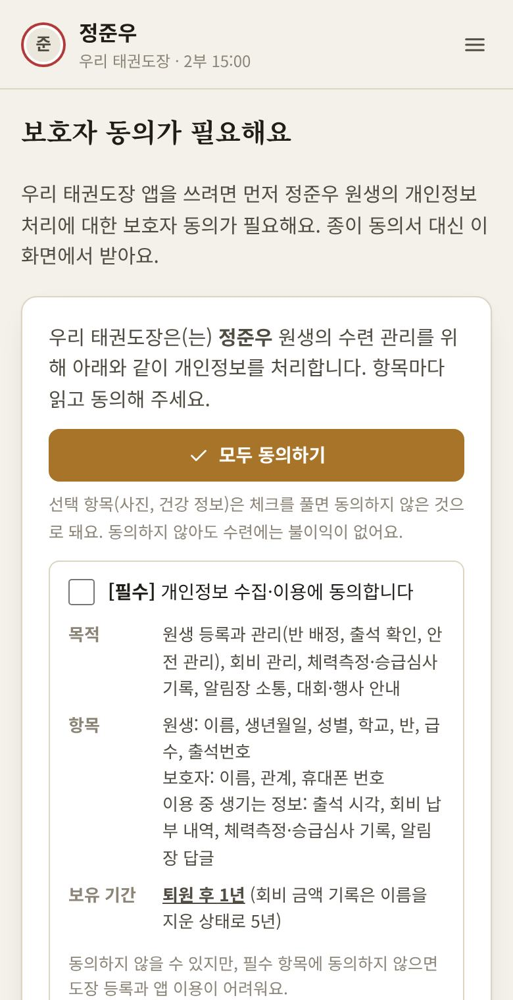
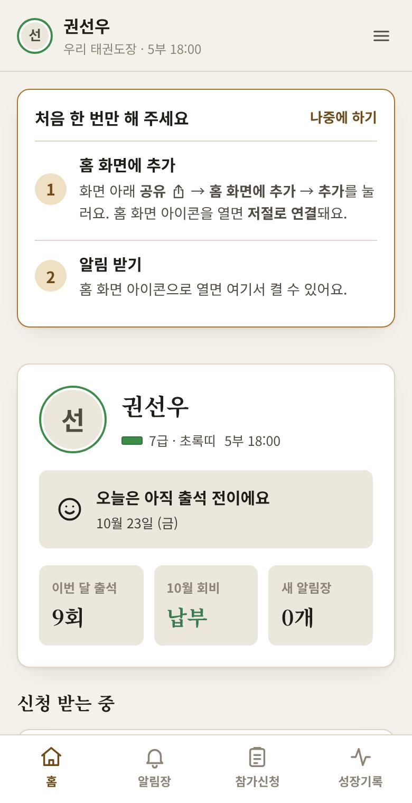
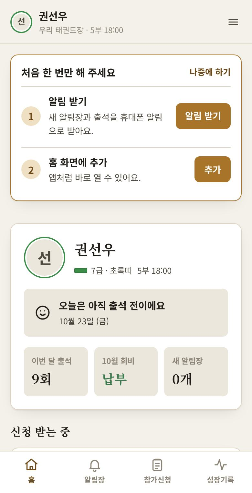
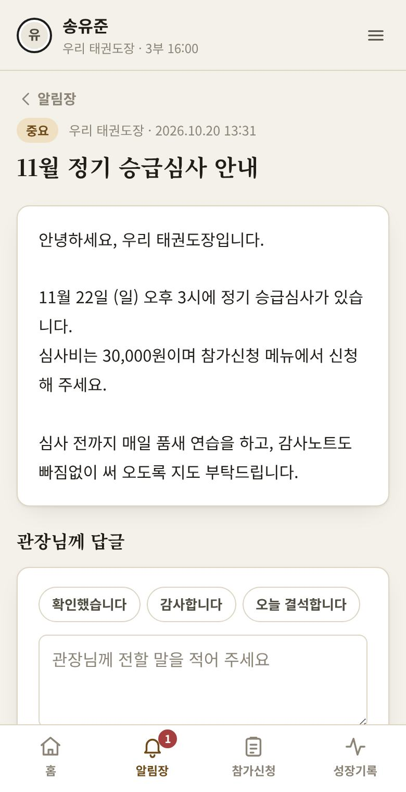
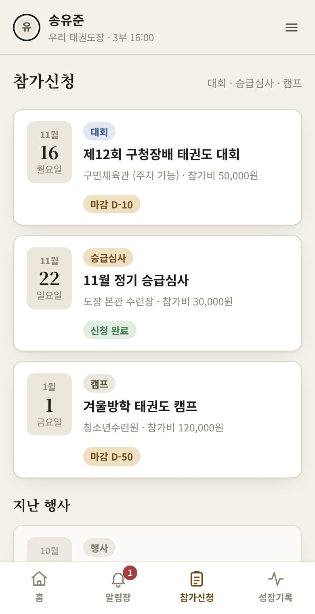
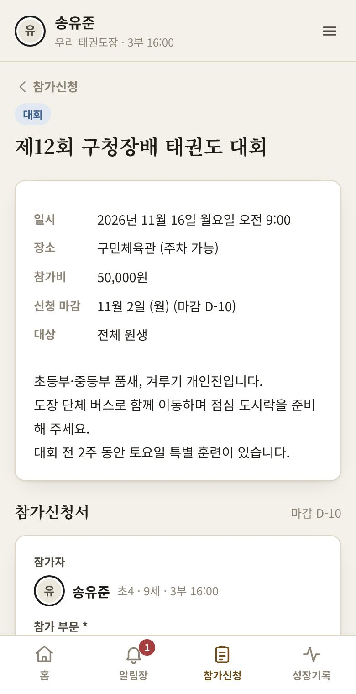
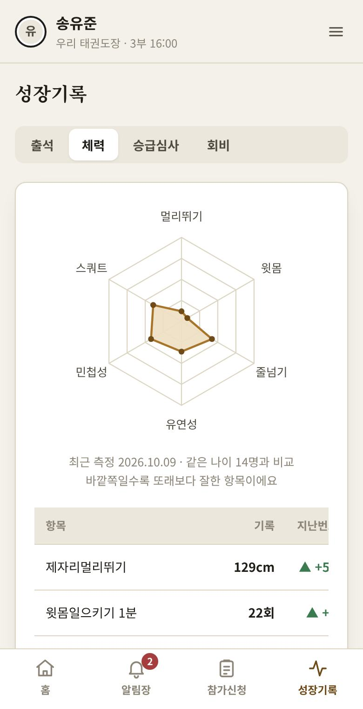
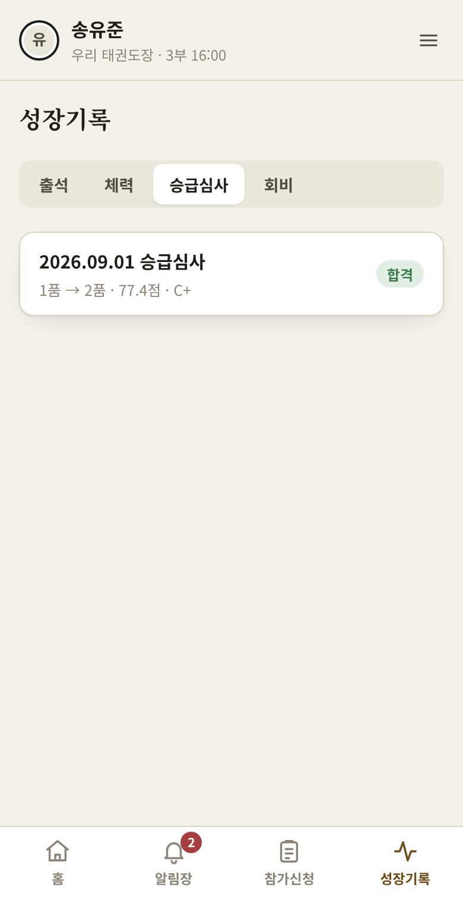

도장 학부모 앱 사용 안내
우리 아이의 출석, 도장 알림장, 대회·심사 신청서, 체력측정과 승급심사 결과를 휴대폰으로 볼 수 있어요. 앱을 따로 설치하지 않아도 되고, 비용도 없어요.
01처음 연결하기
도장에서 보낸 문자의 링크만 누르면 저절로 연결돼요. 아이폰, 안드로이드 모두 순서가 같아요.
- 도장에서 받은 문자의 링크를 눌러요. 아이폰은 사파리로 열어요. 카카오톡 안에서 열렸다면 오른쪽 아래 메뉴에서 Safari로 열기(또는 다른 브라우저로 열기)를 눌러요.
- "초대 코드로 연결하고 있어요"가 잠깐 보이고 저절로 연결돼요. 아무것도 누르지 않아도 돼요.
- 처음이면 보호자 동의서가 나와요. 모두 동의하기 → 서명 → 동의서 제출 (2장).
- 우리 아이 홈 맨 위의 처음 한 번만 해 주세요에서 알림 받기와 홈 화면에 추가를 해요 (3장, 4장).
아이폰은 코드를 다시 받지 않아도 돼요사파리에서 연결한 뒤 그 화면에서 홈 화면에 추가하면, 홈 화면 아이콘을 처음 열 때 저절로 연결돼요. 알림은 이 아이콘에서 켜요.

- 링크 없이 코드만 받았다면 앱 첫 화면에서 학부모를 누르고 코드를 넣어 연결하기를 눌러요.
- 초대 코드는 7일 안에 한 번만 쓸 수 있어요.
- 형제·자매는 한 번에 함께 연결돼요.
- 엄마·아빠 휴대폰 둘 다 쓰려면 도장에 코드를 하나 더 부탁해 주세요.
- "코드가 맞지 않거나, 이미 썼거나, 기한(7일)이 지났어요"가 나오면 도장에 새 코드를 부탁해 주세요.
02보호자 동의서
종이 동의서 대신 휴대폰으로 받아요. 처음 연결할 때 한 번만 하면 돼요.
- [필수] 개인정보 수집·이용: 원생 관리에 꼭 필요한 정보예요. 이름, 생년월일, 반, 급수, 보호자 연락처, 출석·회비·수련 기록 같은 것이에요.
- [선택] 사진: 승급심사 결과증과 알림장에 아이 사진을 쓸지 정해요.
- [선택] 건강 정보: 알레르기처럼 수련 중 안전을 위해 알려 주실 내용이에요.
- 선택 항목은 동의하지 않아도 수련에는 아무 불이익이 없어요.
- 아이가 만 14세 이상이면 아이 본인 동의도 함께 체크해요.
- 내용을 읽고 맨 위 모두 동의하기를 눌러요. 필요한 칸이 한 번에 체크돼요. 원하지 않는 선택 항목(사진, 건강 정보)은 체크를 풀어요.
- 보호자 성함과 관계는 도장에 등록된 대로 채워져 있어요. 맞는지 보고, 칸 안에 손가락으로 서명해요.
- 동의서 제출을 눌러요.
도장에서 확인 문자가 올 수 있어요만 14세 미만 아이는 보호자가 직접 동의했는지 확인하는 절차가 있어서, 도장에서 동의 확인 문자를 보내 드려요.
선택 항목은 나중에 언제든 메뉴(☰) → 개인정보 동의 내역에서 거둘 수 있어요.

03홈 화면에 추가하기
휴대폰 홈 화면에 아이콘을 만들면 주소창 없이 앱처럼 바로 열려요. 앱 홈 맨 위의 처음 한 번만 해 주세요 카드가 알려 줘요.
- 안드로이드: 카드의 추가 버튼을 눌러요. 버튼 대신 안내 글이 보이면 크롬 오른쪽 위 메뉴(⋮) → 홈 화면에 추가 또는 앱 설치를 눌러요.
- 아이폰: 사파리 화면 아래 공유 버튼(네모에 위쪽 화살표) → 홈 화면에 추가 → 추가. 홈 화면에 생긴 태권도 관리 아이콘을 열면 저절로 연결돼요. 그다음 아이콘 안에서 알림 받기를 눌러요.

앞으로는 홈 화면의 태권도 관리 아이콘만 누르면 돼요. 할 일을 다 하면 카드는 저절로 사라지고, 나중에 하기로 접어 둘 수도 있어요.
04알림 받기
도장에서 알림 기능을 켜 두었다면, 새 소식을 휴대폰 알림으로 받을 수 있어요.
- 앱 홈 맨 위 처음 한 번만 해 주세요 카드에서 알림 받기를 눌러요. (카드를 접었다면 메뉴(☰) → 알림 켜기)
- 휴대폰이 알림을 허용할지 물으면 허용을 눌러요.
- 받는 알림: 새 알림장, 우리 아이 출석("출석했어요 · 오후 3:02")
- 잠금 화면에도 보일 수 있어서 알림 글에는 아이 이름을 넣지 않아요. 눌러서 앱을 열면 자세히 보여요.
- 끄고 싶으면 메뉴(☰) → 알림 끄기를 눌러요.
- 아이폰은 홈 화면 아이콘으로 열었을 때만 받을 수 있어요(iOS 16.4 이상).

알림이 안 와요메뉴(☰) → 알림이 안 오나요? 알림 점검을 누르면 어디가 막혔는지 빨간색으로 보여 줘요. 이 기기에 시험 알림을 누르면 휴대폰에 알림이 제대로 뜨는지도 확인할 수 있어요. 알림 허용이 “차단됨”이면 휴대폰 설정 → 알림에서 크롬(또는 태권도 관리 아이콘)의 알림을 허용해 주세요.
05화면 둘러보기
화면 아래 네 개의 탭으로 움직여요. 형제·자매가 있으면 위쪽에 보이는 다른 아이 이름을 눌러 바꿔요.
홈
- 오늘 출석했는지와 출석 시각
- 이번 달 출석 횟수, 이번 달 회비 납부, 새 알림장 수
- 신청 받는 중인 대회·행사, 최근 알림장, 출석 달력
- 회비가 아직 확인되지 않았으면 입금 계좌를 알려 드려요. 입금하시면 도장에서 확인한 뒤 "납부"로 바뀌어요.
알림장
- 도장 공지와 우리 아이 소식이 와요. 중요한 공지는 맨 위에 고정돼요.
- 글을 열면 아래에 관장님께 답글이 있어요. 확인했습니다 감사합니다 오늘 결석합니다를 누르거나 직접 써서 보내요.

참가신청
- 대회·승급심사·캠프 목록에서 행사를 눌러요. 날짜, 장소, 참가비, 신청 마감이 나와요.
- 참가 부문을 고르고, 필요한 질문(체중 등)에 답하고, 보호자 성함을 적어요.
- 개인정보 동의(필수)에 체크해요. 대회처럼 주최 측에 명단을 보내는 행사는 받는 곳을 확인하고 따로 동의해요.
- 손가락으로 서명하고 신청해요. 목록에 신청 완료가 보여요.
마감 전이고 참가비를 내기 전이면 신청서에서 신청 취소를 할 수 있어요. 참가비는 안내된 계좌로 보내 주시면 도장에서 확인해요.


성장기록
- 출석: 달력, 최근 4주·지난달 출석 횟수
- 체력: 측정 기록, 지난번보다 나아진 점, 같은 나이 원생과 비교한 육각형 그래프(다른 아이 이름은 보이지 않아요)
- 승급심사: 점수와 합격 여부. 눌러서 결과증을 보고 이미지로 저장할 수 있어요.
- 회비: 납부 내역


07자주 묻는 질문
- 돈이 드나요?
- 아니요. 무료예요. 인터넷 데이터만 조금 써요.
- 비밀번호가 있나요?
- 없어요. 초대 코드로 한 번 연결하면 그 휴대폰이 기억해요. 그래서 휴대폰 화면 잠금은 꼭 걸어 두세요.
- 휴대폰을 바꿨어요. 또는 초기화하거나 인터넷 사용 기록을 지웠어요.
- 연결이 풀려요. 도장에 새 초대 코드를 부탁해 주세요.
- 아이폰 홈 화면 아이콘을 열었더니 다시 연결하래요.
- 아이폰은 사파리와 홈 화면 아이콘이 따로 저장돼요. 사파리에서 앱을 연 그 화면에서 홈 화면에 추가해야 아이콘이 저절로 연결돼요. 사파리에서 앱을 다시 열고 홈 화면에 다시 추가해 보세요(예전 아이콘은 지워도 돼요). 그래도 안 되면 도장에 새 초대 코드를 부탁해서 아이콘에서 연결해 주세요.
- 다른 집 아이 정보가 보이지는 않나요?
- 아니요. 도장 서버가 우리 아이 정보만 보이게 막아요. 체력 비교도 이름 없이 나이별 숫자만 써요.
- 제 정보는 어디에 저장되나요?
- 도장이 관리하는 서버(구글 클라우드, 서울)에 저장되고, 퇴원하고 1년이 지나면 정리해요. 자세한 내용은 메뉴 → 개인정보 처리방침에 있어요.
- 알림이 안 와요.
- 메뉴(☰) → 알림 점검을 열어 빨간 항목을 확인해 주세요. 아이폰은 홈 화면 아이콘으로 열었을 때만 알림을 받을 수 있어요. 그래도 안 되면 그 화면을 캡처해서 도장에 보내 주세요.
- 화면이 이상하거나 예전 내용이 보여요.
- 앱을 완전히 닫았다가 다시 열어 주세요. 브라우저로 보고 있다면 새로고침해도 돼요. 인터넷이 잠깐 끊겼다면 다시 연결될 때 자동으로 새 내용이 와요.
- 궁금한 점은 어디에 물어보나요?
- 알림장 답글로 관장님께 보내 주시거나 도장으로 연락해 주세요.